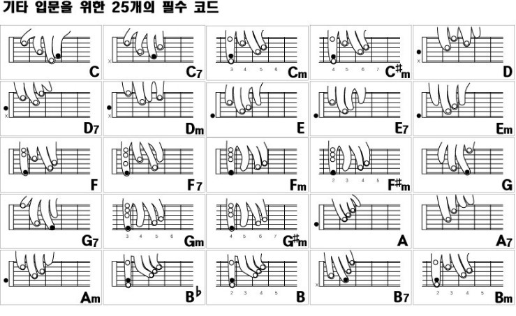

<!DOCTYPE html>
<HTML>

<HEAD>
  <title> 기타 코드 </title>
  <link href="https://fonts.google.com/specimen/Nanum+Gothic" rel="stylesheet" type="text/css" />

  <style type="text/css">
  <!--
  a{color:black; text-decoration:none;}
  body{
    min-width: 760px;
  }
  //-->
  </style>
</HEAD>

<body>
  <p><br>
    <table border=1 <!--rules=cols-->
      <tr>
        <th style="width:50%;">
          <h3>기타의 운지법과 기본 코드</h3>
        </th>
        <th>
          <h3 style="text-align:center;">기타 코드는 오픈코드, 바레코드, 하이코드가 있다.
  </th>
</tr>

<tr>
  <td>
 
 </td>
    <td style="vertical-align:middle;text-align:left;width:100%;font-size:20px">
      <pre>
<style="font-family:'Nanum Gothic';font-size:17px;vertical-align:top;">
오픈코드 : 3프렛 이하에서 잡으며 운지가 안되는 줄이 있다.
         오픈코드를 잡을 때는 엄지를 넥 위로 올리고 손바닥과 넥 사이 거리를 띄워준다.


바레코드 : 모든 줄을 잡는다.
         기본적으로 검지를 이용한 바레가 흔하며 이 때 엄지는 넥 중앙을 지지해야한다.


하이코드 : 3프렛 이상에서 잡으며 운지가 안되는 줄이 있다.
         잡는 법은 매우 다양하며, 기타 악기 특성상 초보들은 자유롭게 사용하기 힘들다.
  </pre>
  </td>
</tr>
</table>

</BODY>
</HTML>
